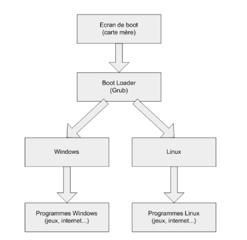
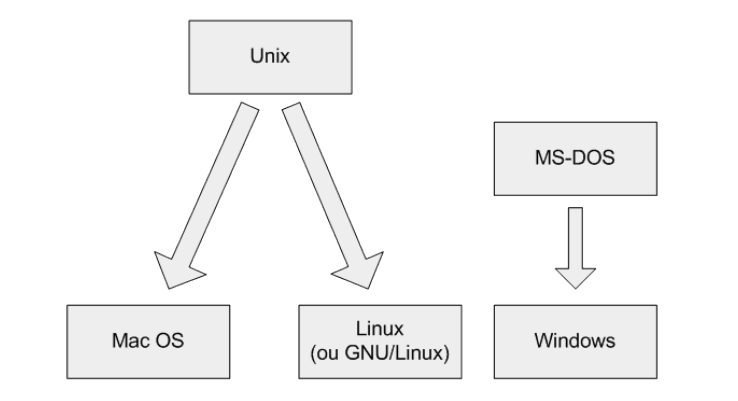
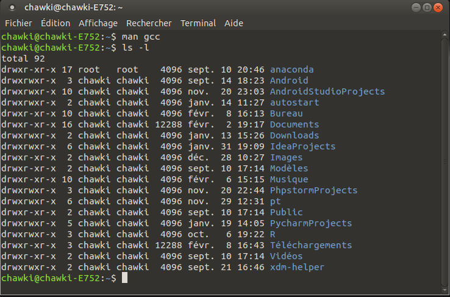
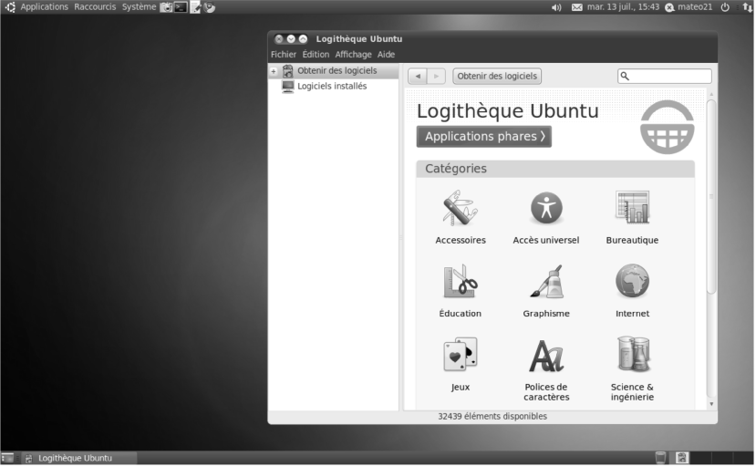

Windows : Système d'exploitation de Microsoft
MAC OS X : Système d'exploitation d'Apple
LINUX : Système d'exploitation Ouvert à tous
Lancement d'un OS
 OS : Operating System, Système d'exploitation en français. C'est un Super Logiciel qui commande nos programmes et les exécutentLINUX avec MAX OS X sont issu de UNIX
 UNIX : l'un des premier OS. Linux est devenu une alternative libre à UNIX qui était propriétaireIl existe plusieurs OS appelé Distribution qui sont basé sur le même noyeau Linux
En voici les principales distribution :
Mise à jour fréquente : une communauté active pour vous servir
Gratuit à vie : Libre, Open !
La console
Environnement graphique : X WINDOW
| OS | Partition | Remarque |
|---|---|---|
| Windows | NTFS | fichier confronté au fragmentation |
| Windows | FAT 32 | obselete, pas de journalisation |
| Linux | EXT 4 | Partition principale, peu de fragmentation |
| Linux | SWAP | Partition d'échange, servant de mémoire vive supplémentaire |
L'utilisateur est limité qu'avec des actions simple (navigation web, edition de texte, outils de developpement,...)
Un mode existe appelé SuperUtilisateur (Le mode chef) est non limité dans (installation des logiciels, editions de fichier système, execution de script,...)
le mode SuperUtilisateur est invoqué par la commande : sudo
de par cette action aucun virus ne peut altérer le bon fonctionnement de l'OS
DUALITE (WINDOWS / LINUX) : Architecture des fichiers
Windows : utilise une séparation des disques (C:\ , D:\ , E:\ )
LINUX : place tous les disque un même endroit derrière / appelée Racine ou Root
DUALITE (WINDOWS / LINUX) : Architecture des fichiers
Chemin sous windows :
C:\Program Files\Winzip
Chemin sous linux :
/usr/bin/unzip
DUALITE (WINDOWS / LINUX) : Architecture des fichiers
| Windows | Linux | Explication |
|---|---|---|
| C:\Program Files | /usr/bin | dossier contenant les exécutables des programmes |
| C:\Windows | /boot | contient les information sur le bootloader |
| G:\ , H:\ | /dev | contient les dossiers des périphériques amovibles |
| C:\Documents and Settings | /home | contient les dossiers des utilisateurs systèmes |
DUALITE (WINDOWS / LINUX) : Architecture des fichiers
| Windows | Linux | Explication |
|---|---|---|
| E:\ | /media | contient le dossier des périphérique à montage (lecteur/graveur DVD) |
| C:\Windows | /sbin | Contient des programmes importants |
| C:\Windows | /sbin | contient des programmes importants |
| C:\Windows | /var | contient des fichiers de journalisation (logs) |